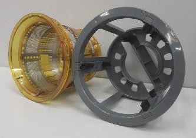
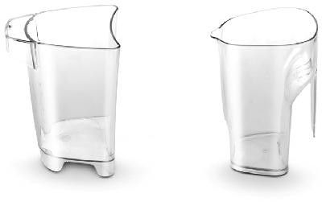
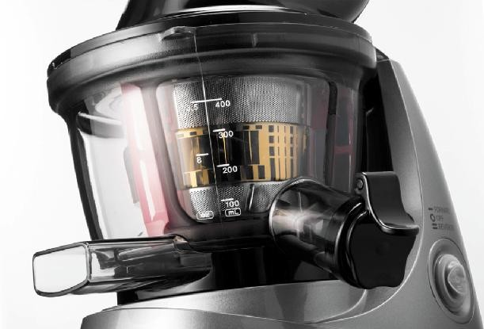
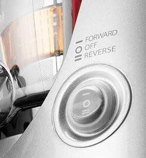
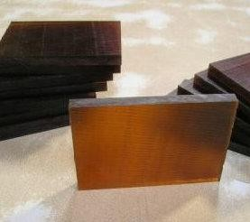

Сокопресс BORK S610
Технические характеристики
Тип соковыжимателя: Шнековый Вертикальный
Потребляемая мощность: 240 Вт.
Количество оборотов: 50 об/мин
Тип фильтра: Составной
Материал корпуса: Композитные материалы
Материал шнека: Полимер – Ultem
Материал рабочих деталей: Полимер – Ultem
Материал фильтра: Нерж. Сталь
Цвет корпуса: Стальной
Страна производитель: Корея
Комплектация
Соковыжималка: 1 шт.
Емкость для сока: шт.объем1.4л.
Емкость для мякоти: 1 шт. объем 1.4 л.

Толкатель: 1 шт.
Щетка для чистки фильтра : 1 шт.

Щетка для чистки: 1 шт.
Крышка «Капля-стоп»: 1 шт.
Руководство по эксплуатации с гарантийным талоном: 1 шт.
Книга рецептов: 1шт.
Непревзойдённая скорость отжима
Увеличенный диаметр загрузочного отверстия 77 мм.
Позволяет работать с целыми продуктами, не тратя время на их измельчение.
Направляющая на толкателе обеспечивает лёгкое поступление продукта в резервуар для отжима сока.
Герметичный клапан «КАПЛЯ-СТОП»
Наличие герметичного клапана «капля стоп» несёт две функции: удобство замены стакана для сока при работе сокопресса и возможность получение миксов из различных соков.
Визуальный контроль процесса отжима
Мерная шкала в унциях и миллилитрах на ёмкости для отжима сока позволяет увидеть количество отжатого сока до момента разлива его по стаканам.
Носик для подачи сока расположен на уровне 15 см от плоскости стола, что позволяет наливать сок в высокий бокал.
Функция «РЕВЕРС»
Наличие функции реверс. При больших количествах перерабатываемых продуктов, в случае блокировки шнека, можно разблокировать его не разбирая сокопресс.
Герметичная защита клавиши управления сокопрессом. Защита от попадания влаги в корпус сокопресса. Можно работать мокрыми руками.
Надёжность и безопасность

Защита от неправильной сборки. Электромагнитный предохранитель защитит прибор от запуска в случае если крышка сокопресса не установлена на место или закрыта не плотно.
Высокопрочный материал
Рабочие детали изготовлены из уникального высокопрочного полимера Ultem, что обеспечит долгие годы эксплуатации даже в режиме самого активного использования.